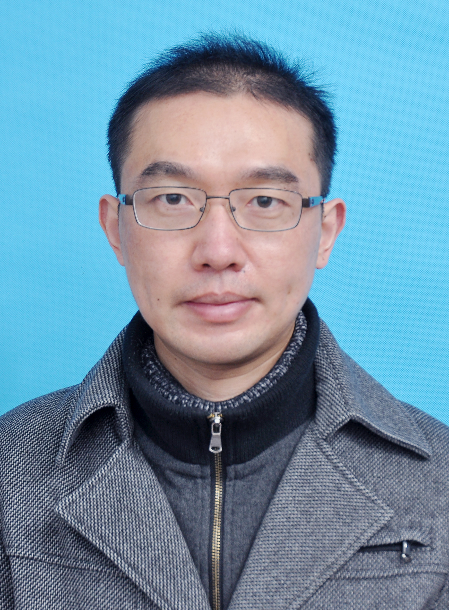
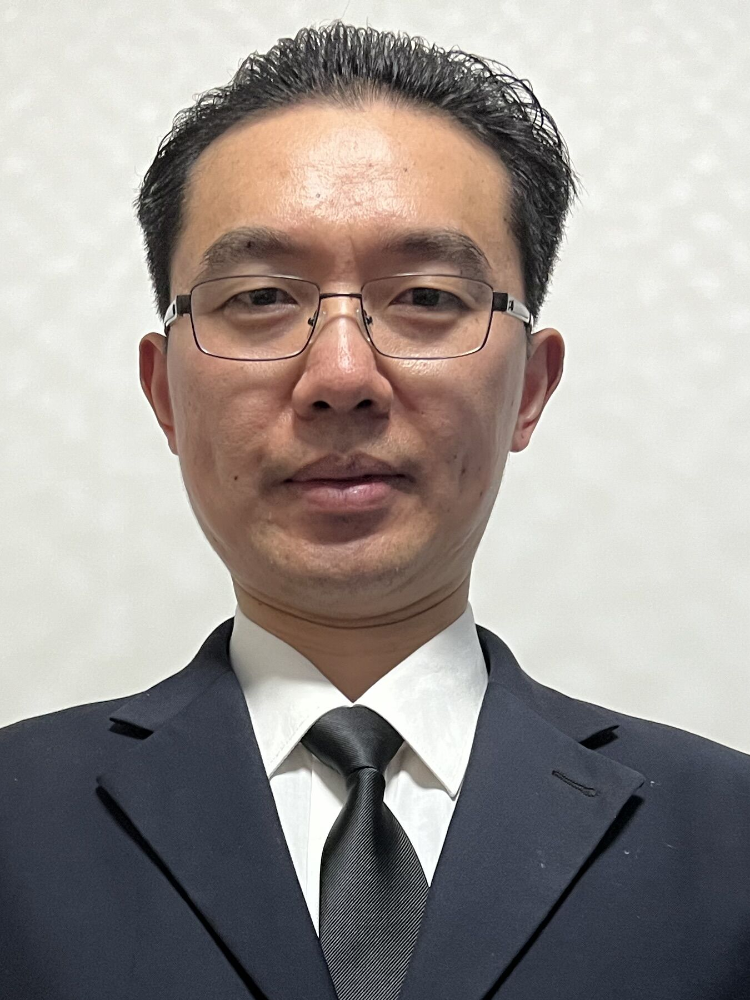

Home  Jie Gui Young Chair Professor E-mail: guijie AT ustc dot edu (preferred and permanent email); Jie Gui is currently the Professor in the School of Cyber Science and Engineering, Southeast University. He obtained his PhD degree in pattern recognition and intelligent systems from the University of Science and Technology of China, in 2010. He has worked as a postdoc research fellow at the University of Michigan. He has obtained the 2012 Endeavour Australia Cheung Kong Research Fellowship and worked in University of Technology, Sydney. His current research interests include machine learning, pattern recognition, data mining, image processing, and computer vision. He has published more than 70 papers in international journals and conferences such as IEEE TPAMI, IEEE TNNLS, IEEE TCYB, IEEE TIP, IEEE TCSVT, IEEE TSMCS, KDD, and ACM MM. He is currently a Senior Member of IEEE. He serves as the peer reviewer of many leading journals and as Area Chair, Senior PC member, or PC Member of conferences such as NeurIPS and ICML. |